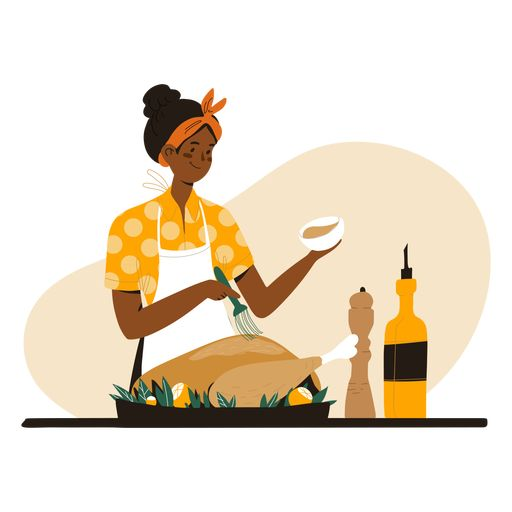

Jollof Rice
Description
There are hundreds of different dishes in the world, but there is only a handful that has enough flavor for me to eat alone.
A bowl of Jollof rice is one of those dishes. You know, the kind where you can taste the spoon or fork after you’re done with the food? I mean, you’d want to lick it clean. Jollof is deliciously addictive.
Jollof rice is a staple in West African cuisine. It’s made from rice, tomatoes, onions, peppers, and other seasonings. The dish is cooked in one pot. It’s simple and easy to make at home—and the end result is absolutely delicious!
Ingredients
- Rice (long-grain parboiled or basmati)
- Canned tomatoes
- Fresh tomatoes
- Bell peppers
- Scotch bonnet
- Onions
- Garlic
- Ginger
- Vegetable oil (for frying)
- Stock (Chicken, beef, or vegetable)
- Seasoning and herbs:
- Curry powder
- Salt
- Black or white pepper
- Bouillon powder
- Thyme
- Bay leaves
Steps
- Building a flavor base is crucial for Jollof rice. Take your time with each step to avoid ending up with a "concoction."
- Start by sautéing the onions for about 3 to 5 minutes.
- Stir in the tomato paste and fry for another 5 minutes to add a deep and rich tomato flavor.
- Add the ginger and garlic, cooking along with the tomato paste for about two minutes. Be careful not to burn them.
- Blend the peppers and add them to the pot. Cook until the sauce thickens, and the oil floats on top, usually around 15 to 20 minutes, depending on water content.
- Add thyme, curry powder, salt, white pepper (optional), and seasoning cubes to build flavor. Adjust seasoning as needed.
- Stir in the rice, ensuring each grain is coated with the sauce.
- Add chicken stock and stir briefly. Cover the pot tightly with a lid or foil to trap steam, as Jollof rice requires steam for proper cooking.
- Once the rice comes to a boil, reduce the heat to medium-low and continue cooking for about 20 to 30 minutes or until the rice is done.
- Serve with options like Fried Chicken, Spicy Grilled Chicken, Grilled Tilapia Fish, or Gizzards and plantains.
